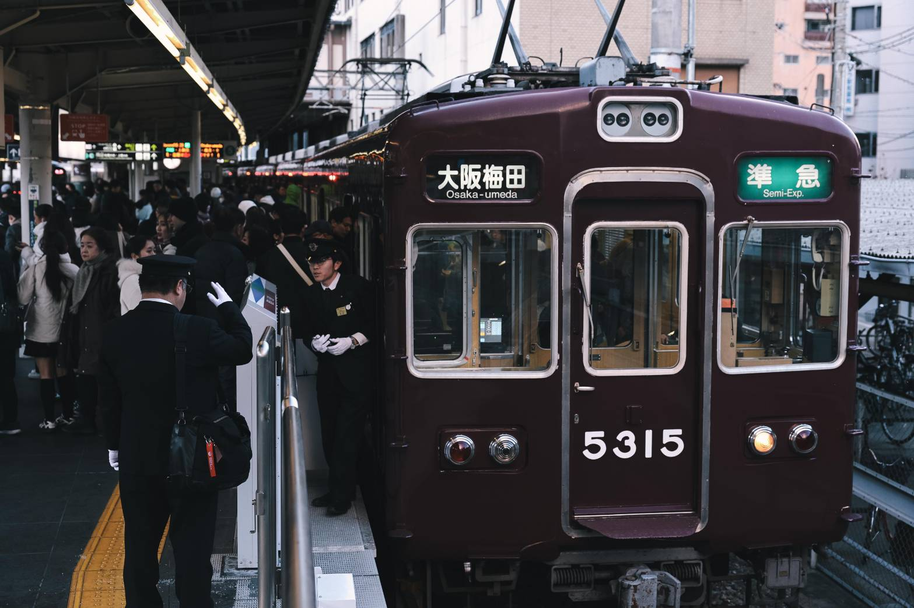
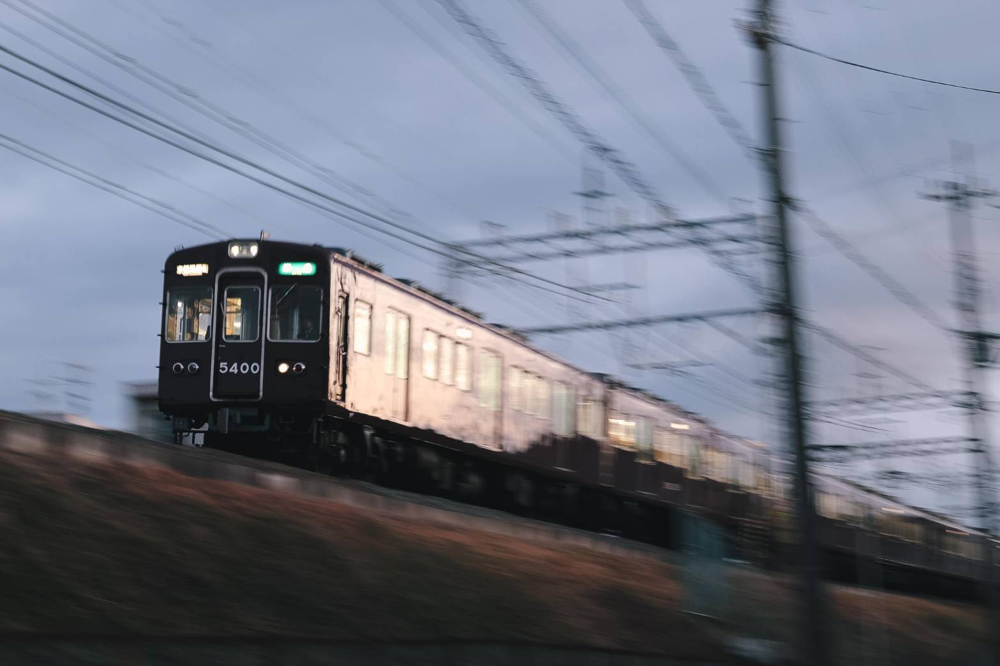

2026年1月1日。元日の朝、少し雲がかかった富士山を横目に新幹線で京都へ向かった。
U25の割引で通常より5,000円ほど安く済んだ浮いた分は、帰りの道中に充てることにした。
昼過ぎまで家族と京都を観光した後、昼過ぎからは別行動の許可をもらい、一人で梅田へ。
話題の座席指定車両「PRiVACE（プライベース）」を使い、移動のなかで撮影の準備を整える。
快適な車内を楽しんでいた私だったが、途中ですれ違った5300系に一目惚れしてしまい、気づけば運用を調べはじめていた。
ガッツリ撮る気はなかったが、ここでスイッチが入ってしまった。
約半日、マルーンの車体を追い続ける。
拙い写真や文章であるが、御笑覧いただければ幸いである。
まずは上新庄や十三の付近で。スカートなし、幕車、前パンなど。なかなか癖になる要素ばかりだ。
日が出てきた。少し雑多な雰囲気を走り抜けていく姿に惚れ惚れしていた。
阪急のマルーン色は曇りと晴れでは全く異なる印象を見せてくれる。

やっぱり撮っておきたい乗務員交代。
見ず知らずの土地で交代駅を特定するのはなかなか難しかった。

少し出ている日を浴びながら快走してくる準急。なかなかいい音を住宅地に響かせていた。
高架化が進む淡路界隈。
真新しい高架の横を走る姿は、京急蒲田高架化を思い出させる...。
すっかり暗くなってしまった。
撮ってばかりじゃあつまんない。ということで一度、5300系に乗車しながらどこで撮るか考えてみることにした。
19時を超えると何本かが車庫に入庫するということで、入換などが狙えるのではないか？と踏み、桂と正雀へ向かった。
慣れない場所での入換の撮影は至難の業。どこで折り返すか、どこに入るのか全く分からない状態で確かに照らされる前照灯を頼りに撮影をした。
あまり遅くなると家族から大バッシングを食らってしまうので、ある程度の時間で切り上げることにした。
約半日という短い時間ではあったが、ここまで撮影できるとは思わず、棚ぼたであった。
また、京都大阪に行く機会があればしっかり撮影地や情報を調べたうえで撮影できたらいいなと願っている。